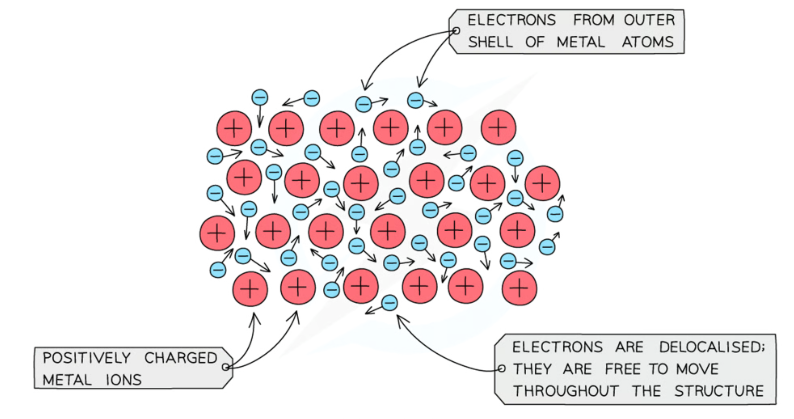
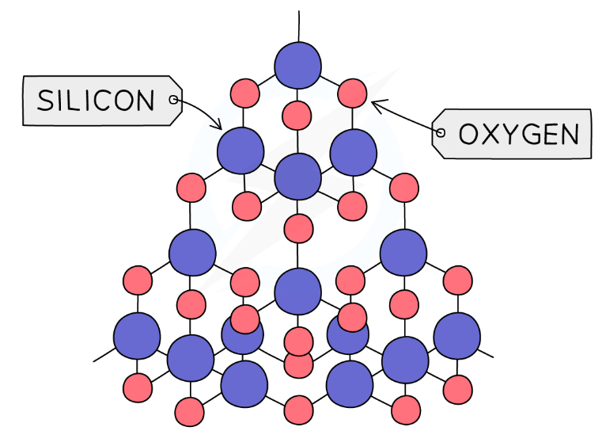
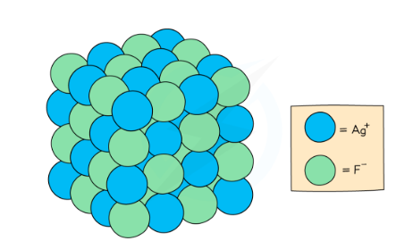
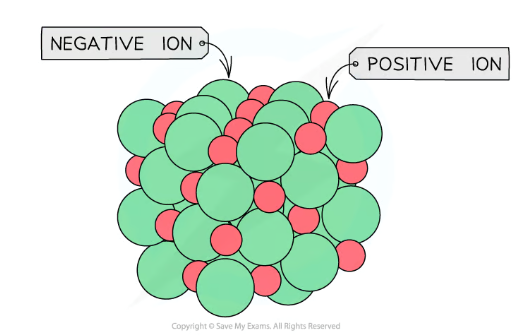
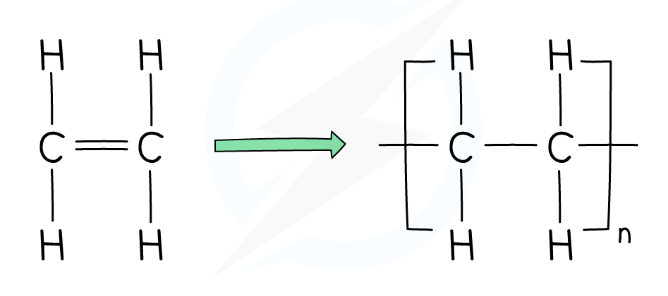
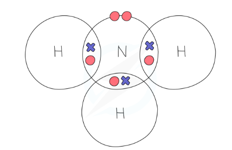
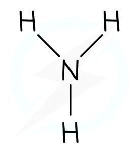
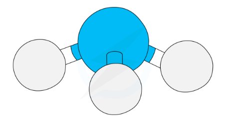

Regular array of positive ions (M⁺) — not "metal atoms"
Surrounded by a sea of delocalised electrons
Electrostatic attraction between the positive ions and the delocalised electrons holds the structure together
Delocalised electrons come from the outer shell of each metal atom
Key vocabulary — learn these exactly
Delocalised
Free to move throughout the whole structure
Electrostatic
Force between opposite charges (+ and −)
Giant lattice
Regular, repeating 3D arrangement
M⁺ ion
Metal atom that has lost its outer electron(s)

Giant metallic lattice: positive M+ ions surrounded by a sea of delocalised electrons free to move throughout the structure
Property
Structural explanation — use this exact wording
High melting point
Giant metallic lattice with strong electrostatic forces between the positive ions and the delocalised electrons. A large amount of energy is needed to overcome these forces.
Conducts electricity (solid and liquid)
The delocalised electrons are free to move throughout the structure and carry charge. (Works in solid state — unlike ionic compounds.)
Conducts heat
Delocalised electrons transfer kinetic energy quickly through the structure.
Malleable / ductile (can be shaped / drawn into wire)
Layers of ions can slide over each other without breaking the metallic bonds — the delocalised electrons re-form attractions with the new layer arrangement.
Exam traps: (1) Write "positive ions" not "metal atoms" or "atoms" — atoms become ions once they lose their outer electrons. (2) Always say "electrostatic attraction" not just "attraction" or "forces". (3) Melting point questions: say "giant metallic structure" — do not just say "strong bonds".
2. Giant Covalent Structures
Key features
Atoms joined by strong covalent bonds throughout the whole structure
No separate molecules — the whole crystal is one giant lattice
Very high melting and boiling points — many strong bonds must be broken
Most do not conduct electricity — no free electrons or mobile ions (graphite is the exception)
Insoluble in water
Silicon dioxide (SiO₂)
Each Si bonds to 4 oxygen atoms
Each O bridges 2 silicon atoms
Si:O ratio = 1:2 → formula SiO₂
Melting point ~1710 °C — very high
Does not conduct electricity
Used in glass and ceramics

SiO₂ giant covalent lattice: each Si (blue) bonds to 4 O atoms (pink); each O bridges 2 Si atoms. Ratio 1:2 → formula SiO₂
Exam trap: SiO₂ is often wrongly described as "made of molecules". It has no molecules — always write "giant covalent structure". It does not conduct electricity because there are no delocalised electrons or free ions.
3. Ionic Structures
Giant ionic lattice
Positive and negative ions in a regular repeating giant ionic lattice
Held by strong electrostatic forces of attraction in all directions between oppositely charged ions
High melting and boiling points — large amounts of energy needed to overcome these forces
Conduct electricity when molten or dissolved — ions are free to move and carry charge
Do not conduct when solid — ions are fixed in position
Space-filling model: silver fluoride (AgF)
Shows the relative sizes of Ag+ and F− ions packed in 3D. Each positive ion is surrounded by negative ions and vice versa.


Giant ionic lattice: positive and negative ions in a regular 3D arrangement, held by electrostatic forces of attraction in all directions
Exam trap: Ionic compounds conduct electricity only when molten or in aqueous solution, not when solid. Always give the reason: "ions are free to move and carry charge". Do not write "electrons move" — it is ions that carry the charge.
4. Addition Polymerisation
Key vocabulary
Monomer
Small molecule with a C=C double bond that can join to form a polymer
Polymer
Very long chain molecule made by joining many monomers together
Repeat unit
The section of the polymer chain that repeats, shown in brackets with subscript n
Addition polymerisation
The C=C double bond opens; monomers add across the double bond to form a chain
The rule: monomer → repeat unit
The C=C becomes C–C (double bond opens, becomes single bond)
All other atoms/groups stay in the same positions
The repeat unit is written in square brackets with n outside
Given the monomer → replace = with – and add the brackets
Given the polymer → remove the brackets and replace – with = to get the monomer

The C=C double bond opens to form a C–C single bond. The repeat unit is written in square brackets with subscript n.
Monomer
Polymer name
Repeat unit formula
Use
Ethene, CH₂=CH₂
Poly(ethene) — polythene
(CH₂–CH₂)n
Plastic bags, bottles
Propene, CH₂=CHCH₃
Poly(propene)
(CH₂–CHCH₃)n
Ropes, food containers
Chloroethene, CH₂=CHCl
Poly(chloroethene) — PVC
(CH₂–CHCl)n
Pipes, window frames
Tetrafluoroethene, CF₂=CF₂
Poly(tetrafluoroethene) — PTFE
(CF₂–CF₂)n
Non-stick coating (Teflon)
Thermosoftening vs thermosetting polymers H
Thermosoftening (e.g. poly(ethene))
Long polymer chains held together by weak intermolecular forces
Chains can slide when heated → melts and re-sets on cooling
Can be recycled by melting and re-moulding
Thermosetting (e.g. Bakelite, melamine)
Polymer chains linked by strong covalent cross-links
Cross-links prevent chains sliding → does not melt, just chars
Cannot be recycled — the cross-links are permanent
Exam trap: You must state that the C=C double bond opens (not just "monomers join" or "bonds form"). Also: the repeat unit has the same atoms as the monomer — no atoms are lost (addition polymerisation, unlike condensation polymerisation).
5. Representing Structures
Five ways to represent a molecule, each showing different information. The exam (Q9 style) asks you to describe what each one shows AND its limitation. Learn all five for methane (CH₄).
Label
Type
Example (methane)
What it shows
Limitation
A
Molecular formula
CH₄
The number and type of atoms in the molecule
Does not show bonding or shape
B
Dot-and-cross diagram
Shows C in centre, 4 H atoms with shared electron pairs (one dot + one cross in each bond)
Shows how electrons are shared between atoms; which electrons come from which atom
Does not show 3D shape or relative sizes of atoms
C
Displayed (structural) formula
H at top, bottom, left, right connected to central C by single bond lines
Shows every bond as a line and how atoms are connected; all atoms shown explicitly
Does not show 3D shape; bonds shown as flat 2D lines
D
Ball-and-stick model
4 white H balls connected to 1 black C ball by sticks; tetrahedral 3D arrangement
Shows the 3D shape (tetrahedral for CH₄) and bond angles
Does not show the relative sizes of atoms (all balls look similarly sized)
E
Space-filling model
4 small H spheres packed around 1 larger C sphere, overlapping to show actual relative sizes
Shows the relative sizes of atoms and how they pack together in 3D
Does not show individual bonds clearly; can be difficult to see internal bonding
B: Dot-and-cross (NH₃)

N has 3 bonding pairs + 1 lone pair; dots = N electrons, crosses = H electrons
C: Displayed formula (NH₃)

All 3 N–H bonds shown as lines; 2D representation only
D: Ball-and-stick (NH₃)

Shows 3D pyramidal shape; relative atom sizes not accurate
Quick limitation guide: A = no bonding/shape | B = no 3D/no sizes | C = no 3D shape | D = no relative sizes | E = no individual bonds. The pattern: each type gains something the previous one lacks but loses something else.
6. Exam Questions with Model Answers
Explain, in terms of structure and bonding, why barium has a high melting point.
[3 marks]
Model Answer
Barium has a giant metallic structure / giant metallic lattice (1)
Strong electrostatic forces between the Ba²⁺ ions and the delocalised electrons (1)
A large amount of energy is needed to overcome these forces / to separate the ions (1)
Reject: "strong bonds between atoms" without naming giant metallic structure. Must say "electrostatic" for the force mark.
Propene has the structural formula CH₂=CHCH₃. Name the polymer formed from propene monomers and draw the structural repeat unit.
[2 marks]
Model Answer
Poly(propene) (1)
Repeat unit: (CH₂–CHCH₃)n — square brackets, subscript n, C=C becomes C–C, all other groups unchanged (1)
For the drawn repeat unit: brackets must be shown, the double bond must be absent (single bond only), and all substituents kept.
The diagram shows five different representations of methane, CH₄, labelled A–E: A = molecular formula, B = dot-and-cross diagram, C = displayed formula, D = ball-and-stick model, E = space-filling model. Describe what information can be obtained from each representation, including the limitations of each.
[6 marks — levels-based]
Model Answer — indicative content (aim for all five representations with limitations for Level 3)
A (molecular formula): Shows the number and type of atoms in the molecule (1 C, 4 H). Limitation: does not show bonding or 3D shape.
B (dot-and-cross): Shows how electrons are shared between atoms, which electrons come from which atom, and the number of bonding pairs. Limitation: does not show 3D shape or the relative sizes of atoms.
C (displayed formula): Shows all the bonds as lines and how all atoms are connected to each other. Limitation: does not show the 3D shape; bonds appear flat/2D.
D (ball-and-stick): Shows the 3D tetrahedral shape and bond angles. Limitation: does not show the relative sizes of atoms accurately.
E (space-filling): Shows the relative sizes of atoms and how they are packed in 3D. Limitation: individual bonds are not clearly shown.
Level 3 (5–6 marks): All/most representations described with limitations for each. Level 2 (3–4): Some representations with limitations. Level 1 (1–2): One or two representations only.